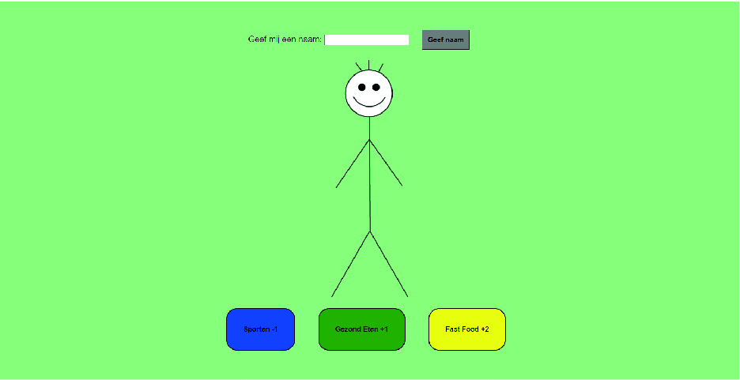
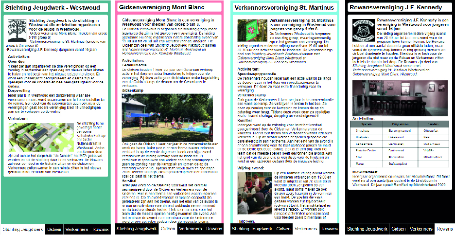
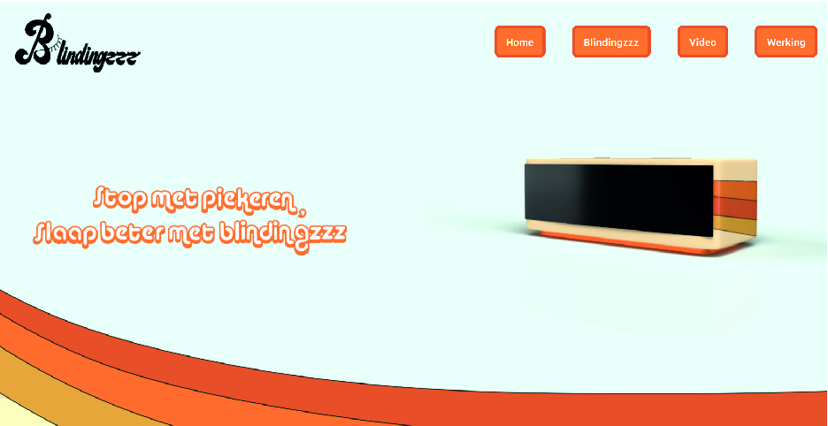
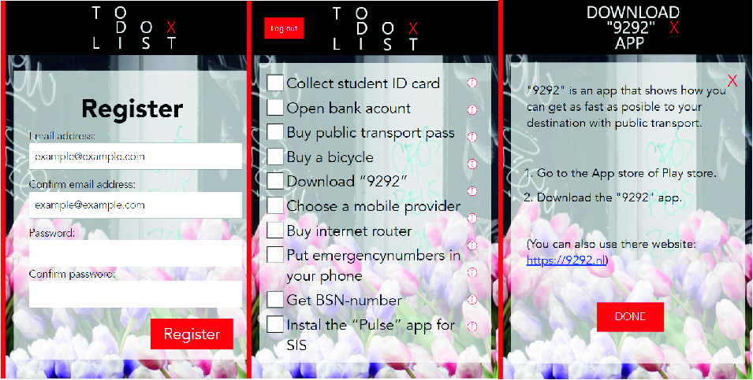
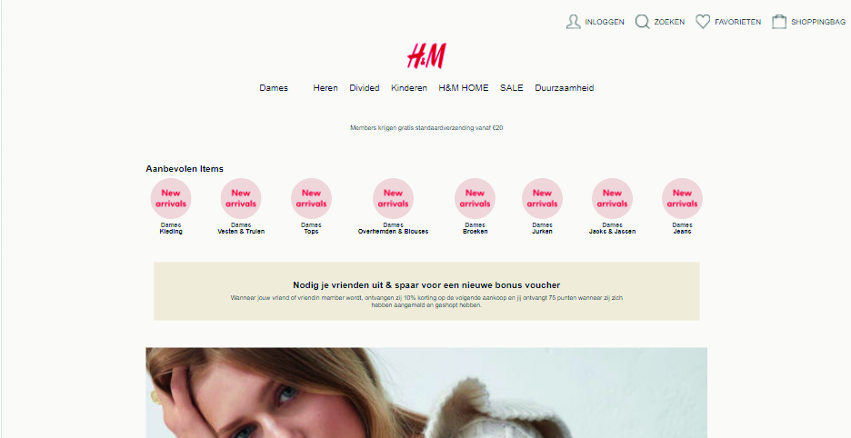
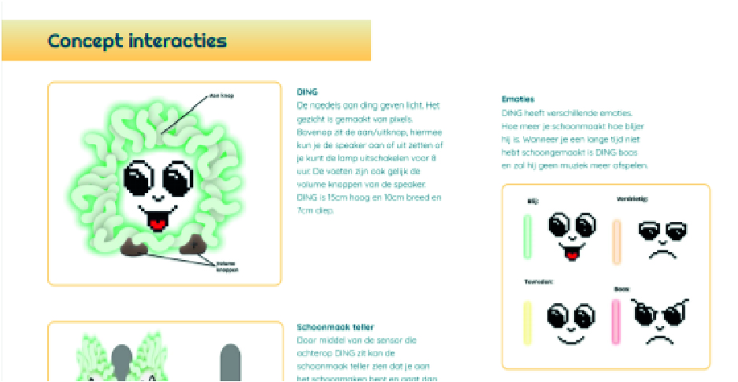
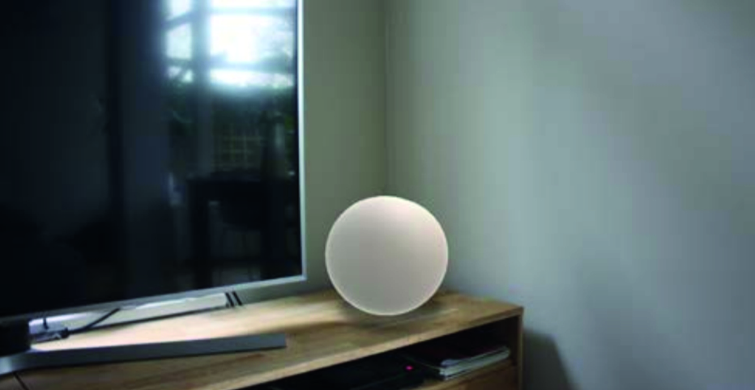
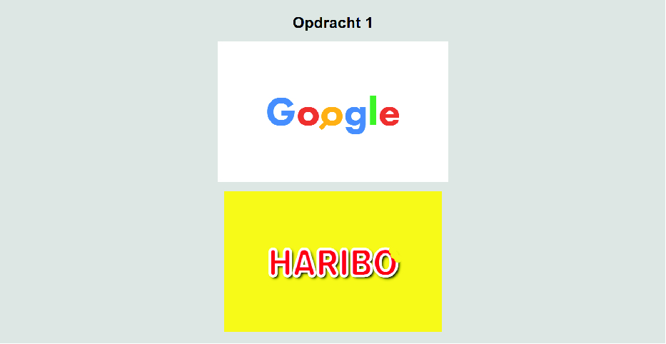

Jaar 1
-
Opdracht Inleiding Programmeren
Bij dit project kregen we de basis geleerd van javascript. Ik heb voor de eindopdracht een mannetje gemaakt die je dikker en dunner kan maken.
-
Opdracht Stichting Jeugdwerk
Bij internet standaarden mocht je zelf een site met verschillende pagina's verzinnen. Ik heb voor de eindopdracht de verschillende verenigingen van stichting Jeugdwerk Westwoud uitgelegd.
-
Slaap Project
Voor het slaap project moesten wij een product ontwerpen die het slapen verbeterd. Op deze one pager wordt uitgelegd hoe het product werkt.
-
ISGA App Ontwerp
Bij dit project heb ik een deel uit de International Student Guide Amsterdam omgezet in een app en dit visueel gepresenteerd op de website.
Jaar 2
-
Project Frontend Development
Bij dit project heb ik van een bestaande website 2 pagina's nagemaakt. Ik heb gekozen voor de website van H&M
-
Project Beyond
Met dit project hebben wij het probleem: "Hoe zouden wij een gezin kunnen motiveren om hun gebruikte spullen in de keuken op te ruimen zodat er geen discussies meer ontstaan?" opgelost met D.I.N.G.
-
Geef een Virtuele Knuffel Project
Bij ubicomp heb ik een product ontworpen om iemand een virtuele knuffel te sturen zonder een scherm te gebruiken.
-
Brand Animations
Voor het vak Frontend voor Designers moest ik van 2 logo's een animatie maken door css te gebruiken. Ik heb voor de logo's van Haribo en Google gekozen.